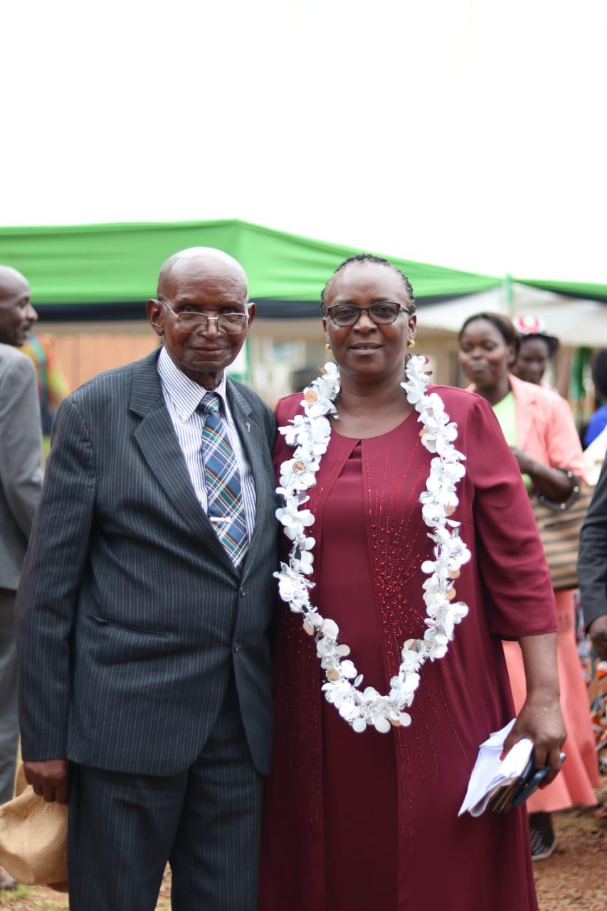
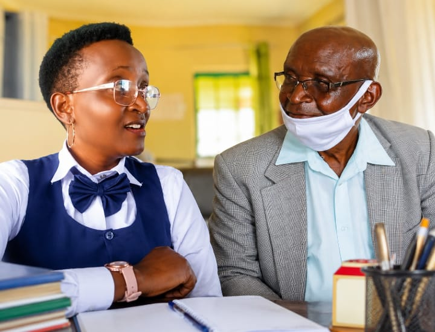
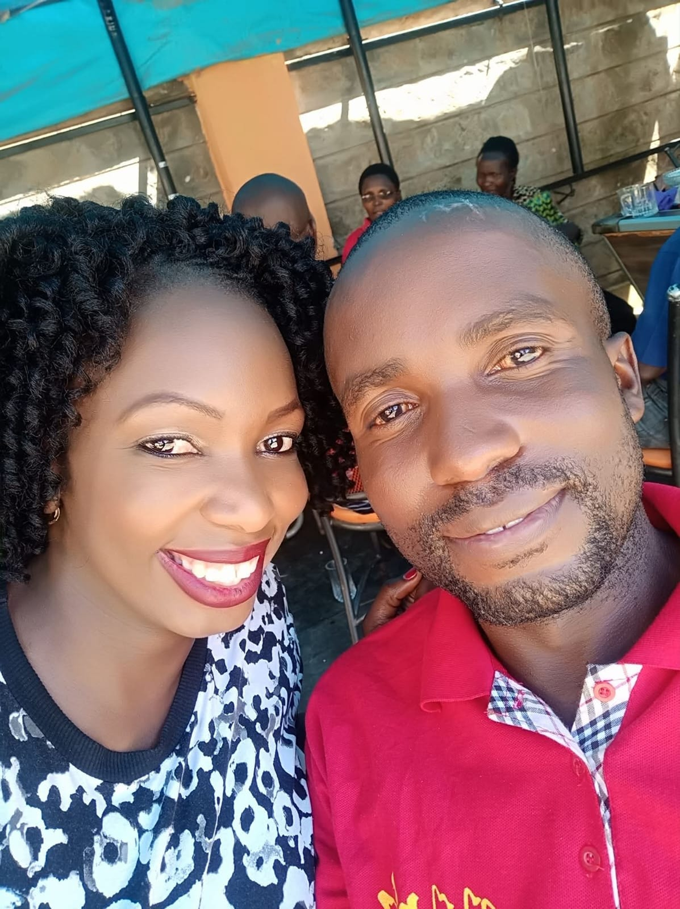
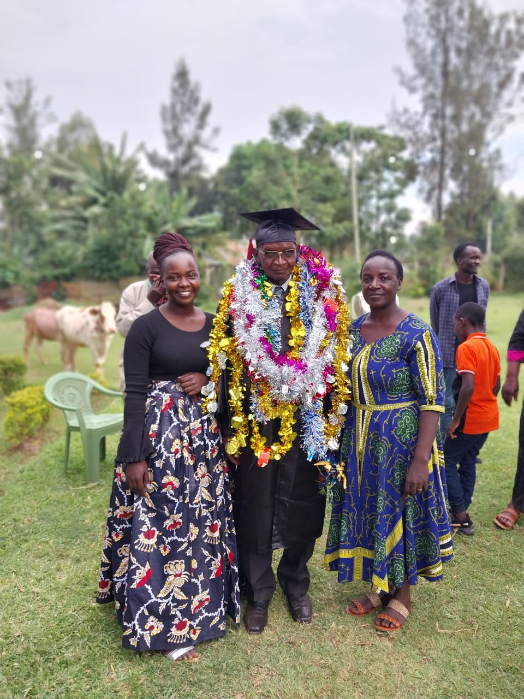
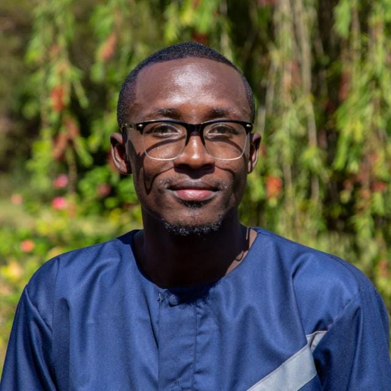
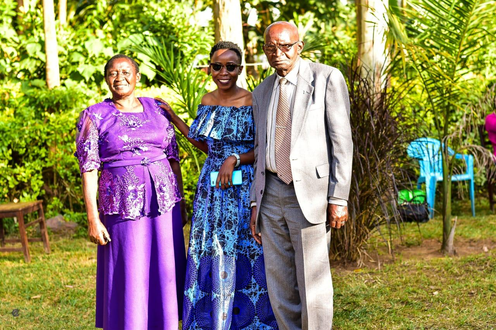
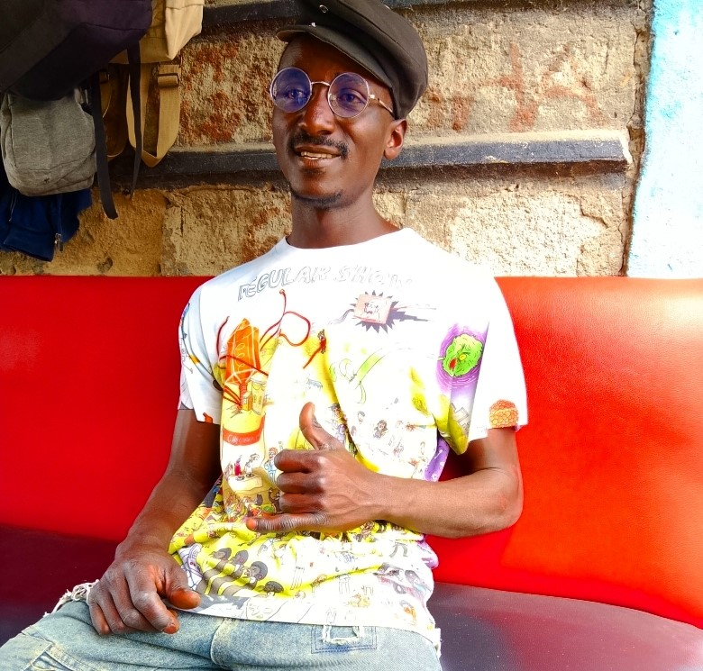
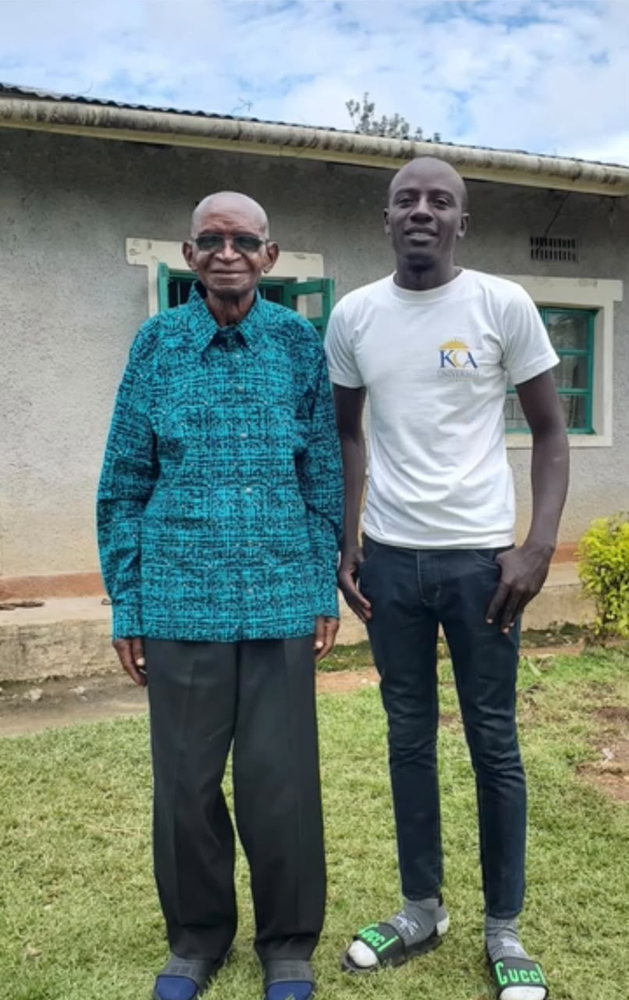

My Papa, My Hero.
Today we gather here to lay to rest, but not to forget, a man who lived for 87 years with dignity.
Dad, you were a responsible husband, father and grandfather in every sense.
You provided for us, you protected and guided us with love and discipline. You always came back home with a paper bag. All my life, you have gifted me Bibles in different languages, that I did not have to buy.
You buried your seven children — a pain no parent should ever know. Seven times you stood at a grave and said goodbye to your own blood 💔, but still stood strong for those of us who remained. You buried all your siblings. You buried your lovely wife. That is not ordinary strength. That is a father's love that refused to break.
Through all this, you remained you.
Always smart in your suits, neat, dignified and always a gentleman. Whenever you walked in, people knew a man of respect had arrived.
In your early years you served as a teacher, headteacher, inspector of schools and a councillor (politician), and later became a servant of God.
But in your home, you were a king, a priest, a father and a loving grandfather.
You have been a cheerleader in my political career from KNUT, always encouraging me to go. Papa, I was to come for your blessings before I launch my 2027 campaigns. Papa! Papa! Where do I go to for blessings? Your love for my husband and children was top-notch.
Now you have gone to join Mum and our siblings. I believe heaven is celebrating the arrival of a well-dressed gentleman today.
Dad, even in the next world I shall choose you.
You gave me a name. Christmas and New Year will never be the same.
Thank you for holding this family together when everything tried to pull us apart, especially when Mama left us. We even asked you to remarry, but you said a big no, because you had to keep the promise you gave Mama. I salute you for that!
Rest in peace, our hero.
You have fought a good fight, you have finished the race. I love ❤️ you, I shall miss you, I shall carry your name with pride. Your name won't die, because your legacy lives on in me, and I promise to carry it with honour.

Annah Ongute MulwaleDaughterPapa,my heartbeat,you were my world,my safe space,my protector,my greatest comfort,you were my shoulder to lean on when life became overwhelming and my confidant.
You named me after your mother, a special gesture that made us bond extraordinarily.
You made sure I bore an unmistakable resemblance of you this always earned me favours through doors where others could hardly find their way.
Everytime I will look at myself, I will see part of you dad. You had the finest qualities papa: smart, intelligent,organised,deeply prayerful,patient, punctual, loving, caring, humble and firm.
I will miss our endless discussions on spirituality,politics, education and sports.
School holidays will now feel empty without our conversations,laughter and debts.Although your departure has left an irreplaceable void in my heart.
I find peace knowing that I witnessed your final moments. I saw you take your final journey into eternity.
I felt you take your last breath papa That moment will forever remain engraved in my heart.
Papa I choose to find comfort that you are in heaven. Rest in peace my heartbeat ❤️.

Dinah Isabella Akasa, DaughterA great man I knew you.
A great man who brought me up.
Dad, you taught me how to grow up.
Papa, you were always there for all of us.
Omwiwa wa Johnah, as you wanted me to call you, you taught me great virtues of love and integrity.
Omusiani wa Dinah, you taught me how to love and cherish brotherhood.
Your teachings will always dwell in me. I will always love you, Papa.
Omusiani Omusiche, the void you have left has never been, and will never be, easy to fill.
Rest in peace, the Manchester United fan of all times.
JTJackton Jonah TokaSon
Tribute to My Beloved Papa
The Man Who Left Me Speechless, but Gave Me a Song to Remember
Some people walk into our lives quietly, yet leave footprints so deep that time can never erase them. Papa, you were one such person in my life.
I remember vividly the very first day I met you. My then-boyfriend, James, had taken me to Kima Church of God, where a family member was being ordained. To me, it was just an ordinary outing, an opportunity to witness an ordination in the Church of God. After all, I was the daughter of an ACK Canon, and church ceremonies were certainly not unfamiliar territory!
Now, anyone who knows me will tell you that I am not easily intimidated. I can be bold, confident, and, yes, quite chatty! But nothing could have prepared me for my first encounter with you, Papa.
For perhaps one of the few times in my life, I was completely tongue-tied. I literally shook like a leaf! James looked on in utter disbelief, probably wondering what had happened to the confident young woman he knew.
And there you were, Papa. The man who would soon become my father-in-law.
I believe you noticed my nervousness, because in your characteristic kindness and grace, you did something I have never forgotten. You gently took me on a tour of your office, making conversation and helping me feel at ease. It was such a simple gesture, yet it spoke volumes about the man you were. Behind the respected spiritual leader was a warm, thoughtful, and compassionate father who knew how to make someone feel welcome.
That was the beginning of my journey with you, Papa.
Over the years, our relationship grew into something deeply precious. And somewhere along the way, music became one of the beautiful languages through which we connected.
Oh, Papa, how I will miss singing for you!
I will miss those days when I would come to see you with only one agenda on my mind: to sing for you.
There did not have to be a special occasion. I simply wanted to sing, and you were always there to listen. Those moments became some of my most treasured memories. They were moments of love, fellowship, and a bond that words alone could never fully express.
Then came the difficult days when illness began to weaken your body.
As I watched your strength slowly fade, I turned again to the one thing I knew I could give you: my voice.
I sang to you, Papa.
I sang to soothe your spirit. I sang to bring you comfort. I sang because I wanted you to feel surrounded by love. But I also sang for myself, because somewhere deep inside me, every song carried a prayer, a desperate hope that you would recover, that you would regain your strength, and that we would have more time together.
And then came that moment I will carry in my heart for as long as I live.
Just two hours before you left us, I sang to you once more.
Your body had grown weak, and your voice could no longer be heard. Yet, somehow, you still found the strength to sing along with me.
Papa, I saw you singing.
I could not hear your voice, but I knew you were singing with me.
Even in those final hours, when words were failing and your earthly journey was drawing to a close, we still had our song.
That memory is both my heartbreak and my comfort. Heartbreak, because I did not know how close we were to our final goodbye. Comfort, because I now know that even as your strength faded, the music we shared remained.
I will forever treasure that sacred moment.
Today, as I reflect on your life and the privilege of having been your daughter-in-law, I realise that the man who once left me trembling and speechless became a father in whose presence I found warmth, acceptance, and love.
How beautiful that our journey began with me unable to find my voice in your presence, and ended with me using that very voice to comfort you in your final hours.
What began in silence ended in song.
Papa, I will miss you more than words can express.
I will miss your presence. I will miss our moments together. Above all, I will miss coming to see you with that one simple agenda: “Papa, I have come to sing for you.”
I wish I could sing just one more song for you. I wish I could see you join in one more time.
But I take comfort in believing that although your earthly voice has fallen silent, your song continues in the presence of your Maker.
And whenever I sing, a part of me will always be singing for you.
Thank you, Papa, for welcoming that nervous young woman into your life. Thank you for the love, the kindness, the memories, and the beautiful gift of being your daughter.
Rest peacefully, my beloved Papa.
Until we meet again, may the heavens resound with the songs we once shared.
I will miss you, Papa. I will always miss you.
With all my love,
Your daughter-in-law.
 Joy Khang'ati NasombiDaughter-in-law
Joy Khang'ati NasombiDaughter-in-lawMy father-in-law was a unique man.
In life, he kept me in check and ensured I lived up to so many goals. He was more than a father-in-law, and treated me like his own.
He never demanded, and was very appreciative when given.
I cherish the life he lived and pray God grants him a peaceful eternal rest.
Rest in peace, father-in-law.
CCliveSon-in-law
The death of mjomba is so heartbreaking!
He has been my mentor, both as a teacher and a reverend. I have learnt so much from him, in my career life and as a minister of the gospel.
I have received a lot of favours because many times, before his friends, I was his daughter, and he introduced me as that!
The Lord gives, the Lord has taken. May the Director’s soul rest in peace.
Forever in our hearts.
AMAuntie Maggy
Kuka,
When we lost our dad, you stepped in and became more than a grandfather to us. You became a father figure, a protector, a mentor and a pillar of strength when we needed one most.
You could never replace our dad, but you made sure we never felt alone. Through your love, guidance, sacrifices and wisdom, you gave us a sense of belonging and the reassurance that we still had someone to lean on.
As we look back today, we realise just how much you did for us. Some things may have seemed small to you, but they shaped our lives in ways words cannot fully express.
We may not have said it enough, but we saw your love, we felt your presence, and we are eternally grateful.
Thank you for choosing to stand in the gap, for helping raise us and for giving us a father’s love in your own special way.
You were our Kuka by title, but a father by the love you showed us.
Rest peacefully. Your love, lessons and legacy will forever live in our hearts.
With love and eternal gratitude,

Jack and Grace MuhindiGrandchildrenMy Kuka, my Friend.
In this season of your departure to glory, I want to celebrate the great man that you were.
First, you were my friend.
And I have to go back to my first memories with you. It was always joyful and fun being around you.
Those days, I looked forward to Christmas holidays. It was the joy of my childhood. Experiencing your love, care, friendship and gifts.
It was during one of those visits that you gave me my first radio. A small yellow one that I still remember to this day, and one of the best gifts I have ever received.
Thank you for being my friend.
You were my Kuka.
My mum’s dad. And my grandfather. And you played this role with such grace and love that I’ll cherish its memories forever.
You were always present, asking about us, ensuring we were growing up well and that all was well with us.
I remember the success card you sent me in high school, when I was sitting for my KCSE, addressed to “Mr. Cecil Ambula,” with a few cash notes in it for my bread.
As your grandson, it hurt seeing you mourn the untimely deaths of some of your children and kukhu.
But I am grateful that you found strength to live on and fulfil your own dreams, including graduating with a degree.
Thank you for being a good kuka.
You were my kids’ great-grandpa.
When I informed my kids that you had passed on, David sank into his chair.
They cherished the few occasions they had with you.
I remember when we gathered them to you in one of your visits to Nairobi, you took time to bless them, and for that, I am grateful.
Thank you for being a great-grandpa.
You were my Pastor and Mentor.
The few achievements I have had in this life have come because I know you were praying for me, and all of us, and that you wanted the best for us.
I remember you always with your white collar. The servant of God. Always working for his Master.
Thank you for serving God with great integrity and being a good example to so many of us.
I am a Pastor today, because you wore that collar with great humility and integrity.
Thank you.
So, kuka, I will celebrate you.
The pain is only in the fact that you are forever absent down here.
But I know where you are.
There is a joy I felt when Mum, dad, kukhu, yourself and everyone else who has left was still around. I know I may never experience that again.
But that’s why I will live right, so I can see you all again, and be that joyful again.
So, Kuka, see you in eternity.
CACecil AmbulaGrandson
Kuka,
How do I even mourn you, my wonderful grandfather and my mother's dad?
I want to take a moment to honour the incredible man you were and the deep legacy you have left behind. Thank you for being my mother's father, the late Pam, whose strength, kindness and character have shaped me into the mother, wife and woman I am today. I will miss you, Kuka.
You were more than just a grandfather; you were a pillar of wisdom and a source of hope. You showed unconditional love through the care you gave my kids, Hezekiah Etindi and Calvin. Your presence brought a sense of warmth and security that we will miss every single day.
Thank you for your guidance, your sacrifices and the endless love you gave us. Though you are no longer with us in person, the lessons you taught us and the love you planted in our hearts will live on forever.
With lots of love, I will forever cherish and miss you, Kuka.
GAGetrude AmbulaGranddaughter
Kuka,
Your love,wisdom and memories will always remain in my heart.
You may be gone from our sight,but you will never be forgotten.
Rest peacefully.
May your memories be a blessing!
With love,

Roselyne Amunga Granddaughter Grandpa, our friend,
Thank you for stepping into the role of the best grandpa in the world, especially after the loss of our parents. Having you close made our journey through grief a little more bearable. Today, it feels like the one shoulder we could always lean on is no longer there, and we now have to find the strength to stand on our own, with God by our side.
We are grateful that we got the opportunity to give you the best we could whenever we had the chance. Thank you for giving us all the love we needed and allowing us to be around you always.We will forever be grateful for the many ways you looked out for us and wanted the very best for us
Our dear old man, we will miss your ‘I dearly love you’ messages, your valentine's day wishes, and your christmas and new year messages. You really wanted to be here longer, to continue loving and taking care of us, but God called you home. I hope that wherever you are, you have found the peace and rest you deserve. Please tell mummy and daddy, we are here, trying to be the best humans they ever wanted us to be. We will definitely make you all proud.
May your memories be a blessing!
With love,
DG & F Dianah George & Felix
My grandfather was a very unique person, in the best way. We had a very special relationship. Even up to now, I have no idea why I was the only one, among his many grandchildren, who was allowed to switch on the TV. I also have no idea why, after reading his favourite newspaper, The Standard, he would bring it to me so that I could read it too. Like I said, we had a very special relationship.
I had the privilege of staying with him and his darling wife, my late grandmother, the Greatest Grandmother of All Times, for a very long time. Grace, Amukonyi and I are forever indebted to them.
Kuka had so many attributes that the list could go on and on. I will mention a few that I picked up as I was growing up, and that I try to emulate as a son, brother, husband and future father.
Love for family: Mzee loved his mother, his siblings, his wife, his children and his grandchildren. He was a safe space for our grandmother. I never saw him argue with her. Well, maybe once, and even then he was only asking why she couldn’t give me some time to study. You see, my grandmother sent me on a lot of errands: to the shop two or three times a day on average, to the kitchen, to the main house, to the bedroom, and sometimes I escorted her to the toilet outside. That is what they were arguing about. She was very cunning, but I still loved that woman dearly.
Priest of the home: Kuka prayed for his family and led by example during family devotions. Most days, if not every day, we prayed together before going to sleep. He always told us, “A house that prays together stays together.” I will carry those words for the rest of my life.
Education: He valued education and was always proud of us whenever we brought home good report cards. When we underperformed, he encouraged us to do better. He attended most of our prayer days, including mine, and I will never forget seeing him at Naitiri Boys High School.
Organised and clean: Okay, I may not be as organised as he was, but I am trying, with the help of my wife. I am very sure that in the whole village he was the only old man who showered twice a day, morning and evening. It was so serious that my grandmother and I used to wonder why, both times, he took 45 minutes or more in the bathroom. I remember one Sunday when my grandmother could not wait any longer for him to come out, so she showered in the cowshed (we had not yet built the en-suite bedroom and toilet). I smile every time I remember that.
To my Kuka, you inspired me so much and helped build my character. Some of the good character I have, I got from my father, and my father got it from you. Thank you for correcting us, for never giving up on us, for always being there for us, and for praying for us and with us. Your lessons live on in me.
Rest in peace, Kuka.

Denvar Atulo MulwaleGrandsonIn Loving Memory of Kuka
Some people don’t just live, they serve. That was Kuka.
He was a pastor, a director of the church, and a shepherd to so many, not just behind the pulpit, but in the quiet way he lived every day. He led with faith, with discipline, and with a heart that always wanted to see God’s work done well.
I will always remember the simple, beautiful moments with him. Driving together to Luanda to buy fish, bread, chicken, and newspapers for him. Those small errands felt ordinary then, but now I know they were precious. It was time with Kuka. Time to laugh, to talk, to just be near him.
And I will never forget our banter about football. Kuka was a die-hard Manchester United fan. He would defend United with all his heart, no matter the score, no matter the season. And me, an Arsenal fan, I would tease him back. We would argue, laugh, and tease each other like true rivals. He never gave up on his team, just like he never gave up on his faith, his family, or his country.
Kuka also loved politics. He followed it with passion, and he had a deep love and respect for the late Prime Minister Raila Amollo Odinga. He would talk about him with admiration, about leadership, about justice, about Kenya. Listening to him, you could see a man who truly cared about his country and its future.
And I will never forget his last days. How we went to buy painkillers for him, and how much pain he was in, pain so deep he couldn’t even get out of the car when we got to Luanda. It broke my heart to see a strong man of God, who had stood so tall for so many years, brought low by suffering. But even in that pain, he remained our Kuka. Loved. Respected. Honoured.
Kuka, thank you for your prayers, for your preaching, for your guidance, and for the example you set for our family and for the church. You taught us to love God, to love people, to love our country, and to serve faithfully.
You are no longer in pain now. You are resting in the arms of the Lord you served so faithfully. And I know in heaven, you are still cheering for United.
Rest in peace, Kuka. We love you, we miss you, and we will carry your legacy forever.
DP & FDennis Pritt and FreziahGrandson
Life is fickle!
I have had so many good times with you, that your death feels so strange. When Rev Ongayo died, you kept telling me mama society we have each other and now you gone.
It is true Gods case has no appeal and so today I celebrate you before the world.
You blessed my marriage during my introduction and allowed us to have a very unique ceremony; you were the first person to lay hands on our rings and promised to hold our marriage in prayer. You have seen us in all season and your departure leaves a void, I hope we live to make you happy and that your smile may never fade.
You know we loved you in life, sickness and even in death your space remains unfilled.
Rest in Peace Director, Reverend Titus Peter Mulwale mwana wanga Rev Martha Ongayo.
In the beginning, God

Kana and KomuonoGranddaughter - A.K.A,Mama societyGrandpa, you were not just my grandfather. You were my tailor of character.
You are the reason I love suits. Not because of the cloth, but because of the man inside it. You taught me that a man does not wear a suit to look rich; he wears it to look ready. Ready for work. Ready for responsibility. Ready for God. Whenever I button my jacket, I am still copying you.
You celebrated our wins and made sure you were part and parcel of our lives. In every step of my life, however small, you made me feel proud and appreciated.
I remember in 2024, after my graduation, you became more than just a confidant; you became a prayer partner in the wilderness I was in. You prayed for the journey to Canaan to be swift. We prayed, and in every step you reminded me that God had not forgotten me and that his time would always be ripe. Every time you got a chance, you encouraged me to be patient and to soldier on.
And it came. God answered your prayers, and we got into Canaan.
Sadly, Guks, just days before we received the first fruits of my breakthrough, you are no more. You prayed for the door to open, but you did not stay to see me walk through it. That is the wound I will carry.
I have cried a lot remembering how you rejoiced on receiving the good news of my entry into Canaan, acknowledging how God had answered one of your prayers this year. However, I am relieved knowing that you have now come one on one with your Master, in a place where pain is not known.
I had the privilege of being named after you, and to some extent most folks in our church used to call me Director. With pride, I will carry your name and scale up the legacy.
I promise you this: I will wear my suits the way you wore yours, clean, humble, and with dignity. I will work the way you prayed.
Rest easy, Guks, with love.
TMTitus Malikhu (Somo)Grandson
A loving, wise, and humble man whose legacy will live forever.
R.I.P. Kuka 🕊️
GAGrace AndenyiGranddaughter
How do I begin to say goodbye to someone who shaped so much of my life? Losing you feels like losing a piece of my childhood, my home, and my heart. You were more than a grandfather; you were a father figure, a provider, and our safe place.
Alongside our parents, you helped raise us. You made our birthdays special, took us school shopping, bought us toys, brought us cakes, and always checked on us. You loved us so deeply and made sure we never felt forgotten.
One of my most precious memories will always be how proud you were when I told you I wanted to become a cabin crew. You believed in my dream and made me feel like I could achieve anything. Grandpa, it breaks my heart that you left just when my dream was beginning to become a reality. I wish you could have lived to see me wear that uniform, walk into an airport knowing I had made it, and hear me tell you that I finally did it. I wish I could have celebrated that moment with you and seen the pride in your eyes one more time.
You always spoke so beautifully about us and believed we were destined for greatness. Thank you for every sacrifice, every birthday cake, every gift, every encouraging word, and every moment you made us feel loved.
Though I can no longer hear your voice or share my achievements with you, I promise to carry your love and hopes with me. Every milestone I reach will be a tribute to you.
Rest peacefully, Grandpa. I am forever grateful that I got to be raised and loved by you. I will make you proud, even from afar. Until we meet again, may your soul rest in eternal peace. ❤️🕊️
MNMMeghan Noel Mulwale,Granddaughter
Kuka,
I thank God for the life He gave us with you.
Through your wise counsel and Biblical acumen, I learnt the fear of God.
May you happily rest at Christ's bosom, your Master, till we meet again.
Perhaps, please pass regards to the folks that have gone before us.
Amen
TEATony Elias AmbulaGrandson
Tribute to Grandpa, Rev. Titus
I was blessed to stay with you. I lived with a true man of God. I saw your faith every day: in your prayers, in your Bible and in your love. Grandpa, I will miss your voice in the house and your prayers. Thank you for teaching me to trust God. I will miss you forever.
GAAGrace Asami AnneGranddaughter
To the world, he was a great man, but to me, he was everything. He was my parent, my protector, my provider, and my steady prayer partner. Growing up under his care, I never lacked love, guidance, or security.
Kuka raised me with patience and strength. He was the first to celebrate every step of my journey, the one who always trusted in who I was becoming, and the pillar who prayed over my life daily. In his quiet wisdom and warm affection, I saw what true faith and unconditional love look like.
Thank you, Kuka, for believing in me, for covering me in your prayers, and for being the foundation of my life since childhood. The lessons you taught me and the love you poured into me will guide me for the rest of my days.
Rest in peace, Kuka. You fought the good fight, and your legacy lives in my heart forever.
MMMorgan MuhindiGrandson
Kuka, you were an enigma of wisdom and a doyenne of strength in our family.
Your demise has left an emptiness no words can adequately describe.
Though your presence is gone, your legacy will forever live in our hearts.
Rest peacefully, Kuka. Forever missed, forever remembered.
DBDanson BrightGrandson
Kuka, in this your departure, I celebrate you as a true Man, Leader and Legend — not just in the Mulwale's Family, but in the community as a whole.
Your death reminds us that tomorrow is never promised.
Love your people while they are still here, just like the way you did. Make time for them, forgive them, appreciate them, and never take their presence for granted.
I just can't tell how much it hurts me right now, but I am trying to push the thoughts away. I wish I had an explanation for why things had to end this way, but sadly, some questions don't have answers, and I have to live strong enough to accept it.
Sometimes the strongest people are those who smile in public while carrying unbearable pain in private 🥹.
Goodbye GrandPa. Till we meet again.

Titus MuhindiGrandsonToday I mourn not just my grandfather, but my hero, my teacher, and the foundation of my life.
Grandpa, you raised us with discipline, love, and wisdom. You taught me to serve people before myself, to speak the truth even when it is hard, and to lead with humility. Every value I carry was learned sitting at your feet.
You are the greatest inspiration to my political journey. When I decided to vie for MCA, you were the first to bless me, to pray for me, and to tell me, “Go and serve the people as you have served this family.” Your words gave me courage when I had none.
Because of you, I want to be a leader who listens, who helps the poor, and who leaves the community better than I found it - just like you did for our family.
You have rested, but your voice will guide me in every baraza, every decision, and every step I take to serve our people.
Rest well, my hero. I will make you proud.
Forever your grandson

Teddy LitunyaGrandsonTribute to Khocha
Khocha, we knew this day would come, but we never envisioned ourselves writing a tribute. You were, and still remain, a presence in our lives that has been quite impactful to us.
You loved us genuinely, honestly and unconditionally. You stood in the gap when we lost our parents and resolved our disputes in the fairest and most peaceful way.
You were our biggest cheerleader and always prayed for us. We will miss you, but we take comfort in the knowledge that you, like the apostle Paul, fought a good fight and kept the faith. You are in heaven with our heavenly Father.
Rest, Khocha.
ASAbana ba Sarah Sitati
Today, I am honoured to celebrate the life of a man who leaves behind an incredible legacy in the lives of many.
To me, it is an honour to call you Grandpa, not just because you were my grandfather, but because you took responsibility for raising and taking care of my mum, Queen Luciana, from the tender age of seven, despite her being your sister-in-law. Isn’t that a remarkable act of love and selflessness?
I strongly believe that most of the virtues Mum instilled in us were passed down to her by you and the late Rev. Roselyne. My dad must be so proud because you helped mentor and mould a virtuous wife and a wonderful mother to us. You never stopped seeing Mum as your daughter even after Kukhu departed. You were truly one of those special people who left footprints in my life that time can never erase.
I vividly remember that if it weren’t for your intervention, perhaps I would have repeated Class Eight simply because I didn’t get the chance to join the mighty Bunyore Girls’.
I was also looking forward to fulfilling Kukhu’s wish of “Munderekho ebidu endie” through you. I was almost getting there, but unfortunately, God had different plans. 😢
You were the man who helped create beautiful childhood memories for my siblings and me. You and the late Rev. Roselyne stepped in and stood in the gap for Mum when she had to go to college. Which in-law does that? You were simply amazing! Your love went beyond family titles and expectations.
Your memories will forever live in me, and I will never forget some of our memorable words, especially “Omukofu ovola shina”, just as Jack would always say.
We have lost a great scholar, an excellent man, and a true family pillar. I will deeply miss those moments of calling Mum just to remind her to pass by and check on you whenever she went to school. Little did I know that one day, those simple routines would become treasured memories.
Although saying goodbye is painful, I find comfort in knowing that your life was meaningful and that your legacy will live on through the generations you leave behind.
Thank you, Kuka, for mentoring my mum, for the sacrifices you made, and for inspiring me to understand that education has no age limit. You taught us that love is not merely spoken but demonstrated through responsibility, sacrifice and action.
You were indeed a cherished soul, and your absence will leave a void that words cannot adequately describe. However, your values, teachings, love and legacy will forever live on through us.
Rest in eternal peace, Kuka.
RARouzy Anyangu